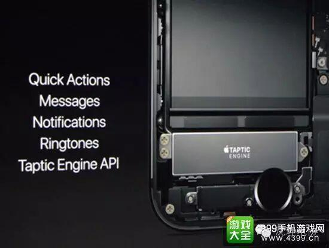
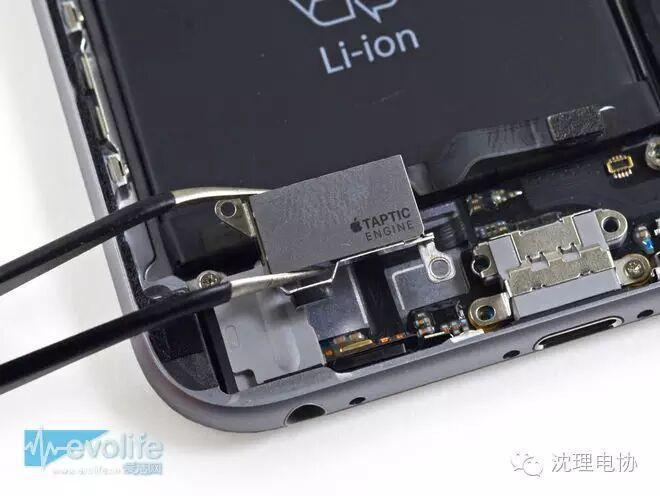
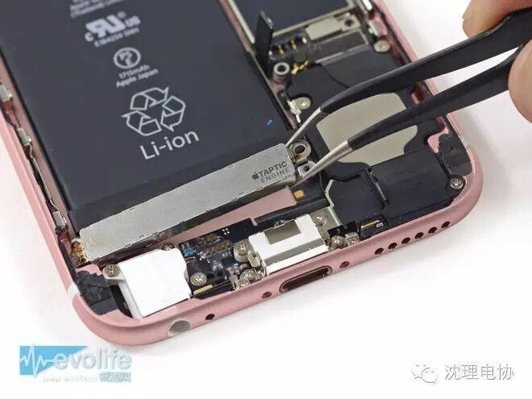
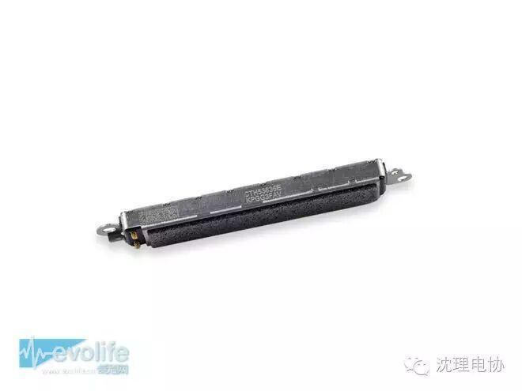
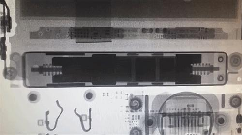

它成功骗过了你的感觉——Taptic Engine.
3D Touch的体验完全取决于它
北京时间9月8日凌晨1点，苹果发布了瞩目期待的旗舰iPhone 7系列。取消耳机孔，同时HOME键也发生了变化--------实体Home键，不再是按压式物理按键。不能按，很鸡肋？反人类？不不不，Apple却做到了手指按下去实体键的感受，奥妙就在于这颗印着Apple LOGO 的振动马达。

Taptic Engine是苹果产品上推出的全新震动模块，该元件最早出现在Apple Watch智能手表设备中，苹果新款iPhone 6s和iPhone 6s Plus手机中，也同样内置了Taptic Engine，设计上有所升级。
简单来说，Taptic Engine是苹果新设备中，采用的全新震动模块，这颗震动模块经过特殊设计，能在短时间内达到震动的最佳状态，这与普通振动马达所做不到的。
新一代iPhone 6s之所以电池容量相比上一代iPhone 6还缩水95mAh，原因就在于Taptic Engine模块占用了电池仓的空间。
全新Taptic Engine振动模块与Apple Watch支持的Force Touch触控技术有关，而iPhone 6s中的Taptic Engine同样与3D Touch触控技术有关，Taptic Engine技术能够准确再现点击、触碰以及其他触觉效果，不同的屏幕操作，可以感受到不同的振动触觉效果，带来更好的用户体验。




在 iPhone 6s 中苹果使用了新的 Taptic Engine，振动变得更加的微弱。这样每当设备发出振动提醒之后，也许就会只有 iPhone 的用户才能够感受到这种振动，从不会影响到用户周围的人。 除了这个新的“已同步”默认振动项之外，你可能还发现了一个新的 Accent 振动项，这是 iPhone 6s 的短信提醒铃声的默认项。苹果之所以想要充分利用新的 Taptic Engine，可能是因为 iPhone 6s 中新增了 3D Touch，它能够利用其中的细微振动模式，这是旧的振动马达无法做到的。即使你对 3D Touch 并不感冒，但是能够提供实时反馈的这个 Taptic Engine 还是会给用户带来一定的好处。
可以说，Taptic Engine 作为桥梁嫁接了数字-实体之间的差异。苹果将这种触觉反馈技术使用到目前已经发展成熟的 iOS 设备，不仅能够让苹果便携设备的一致性更高，而且还能让这些设备的用户获得前所未有的用户体验。
比对iPhone 6和5s的震动就能明显感觉出差别，6s自然是更上一层楼。人们常说某个手机点击屏幕按键的时候，震动反馈更加灵敏，更加干脆、“清晰锐利”，这究竟是由什么造成的？

（动图，X光下iPhone 6s的Taptic Engine是这么震的）
我们将6s的震动马达比作是一辆高速运动车，而5s的震动马达比作价格实惠的紧凑型汽车。在0-100的加速上，运动车的爆发力足以将后者远远甩在身后；并且在同时踩下刹车时，前者可以更快制动。这也是震动马达所应达成的一项指标，即波形从0%到达90%需要多久，这其中的加速度成为关键，也就是当用户手指按到屏幕上，震动马达给出响应达最大振幅，自然是越快越好，同时在需要停止时又能以最快的速度刹车。这才能有干脆、灵敏的感觉，人类对于毫秒级别的响应就是如此有偏执。